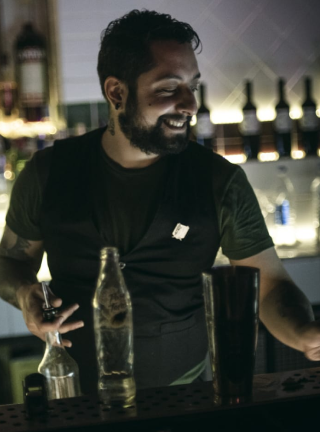
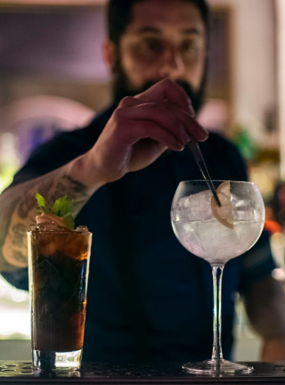
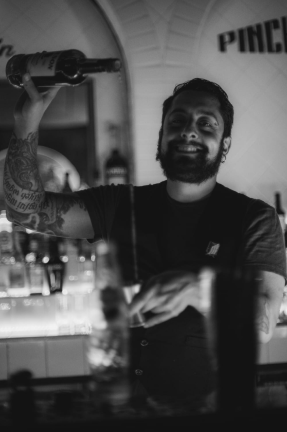
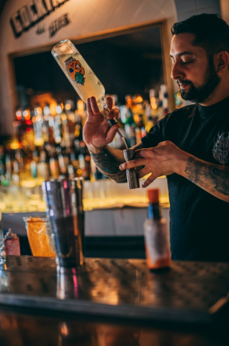

Datos Personales
- Nombre
- Rodrigo Javier Pérez Blanch
- Edad
- 35
- Nacionalidad
- Argentina
- Recidencia
- Córdoba, Córdoba, Barrio Güemes
- Estado civil
- Concubinato
- Teléfono
- +543548400858
Experiencia Laboral
GaleríaCuento con más de una década de experiencia en el rubro gastronómico, puntualmente como headbartender. Durante mi carrera armé equipos laborales, creé cartas y menús, organización de eventos, desarrollé el branding de las diferentes empresas y administré tanto personal como procesos productivos. También trabajé para marcas nacionales y locales realizando branding y eventos. En este tiempo no solo desarrollé habilidades puntuales del rubro, sino también habilidades blandas, como son el trabajo en equipo, orientación a resultados y trato con el cliente. Actualmente me dedico a la asesoría de locales gastronómico, mientras me reinvento y estudio buscando un lugar en el mercado IT.
- 
- 
- 
- 
Sobre Mí
Soy una persona dinámica y voluntariosa en búsqueda de un grato ambiente para aprender y crecer. Me desenvuelvo mejor trabajando en equipo, generando un buen feedback con mis compañeros de trabajo. Mis hobbies son la música, el cine y el anime, la lectura y el gamming. Pasatiempos que me dieron muchas herramientas, como un buen nivel de ingles (B1) y una amplia cultura general.